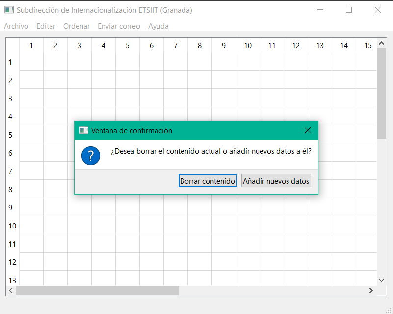
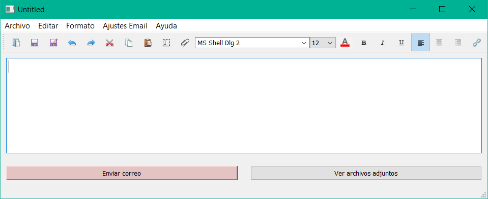
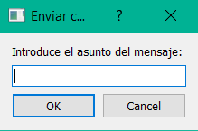
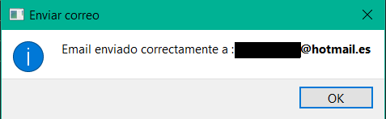

Debemos abrir el software correspondiente. Una vez abierto aparecerá una vista tal que así :

- Nuevo : se crea una nueva página y se borran los contenidos.
- Abrir : se abre un fichero CSV con los datos de los alumnos. Normalmente se abre el fichero CSV generado tras cargar una serie de alumnos.
- Importar Alumnos : se selecciona la carpeta con los todos los ficheros CSV de los alumnos y se cargan estos datos en un único fichero que se muestra por pantalla.
- Guardar CSV : una vez cargados los datos de los alumnos, se permite guardar todo ello como un único CSV, que posteriormente se puede abrir con la opcíon 'Abrir'.
- Salir : termina la ejecución del programa.
Seleccionamos la opción de Importar Alumnos, en la que vamos a seleccionar la carpeta que contiene todos los ficheros .csv con los datos de los alumnos. Una vez seleccionado nos aparecerá dos opciones :
- Borrar contenido: se borra todo el contenido de la pantalla para añadir datos nuevos.
- Añadir nuevos datos: se añaden nuevos datos a los que ya se muestran por pantalla.

Como actualmente no tenemos datos de los alumnos, pulsaremos en Borrar contenido (aunque se podría haber seleccionado la otra opción, ya que, debido a que no tenemos datos, las dos opciones trabajarían igual). A continuación nos aparecerá un explorador en donde podremos seleccionar la carpeta correspondiente. Una vez seleccionada nos aparecerá los alumnos cargados :


En este caso vamos a trabajar con los alumnos Lucía y Pepe.

Una vez disponemos del editor ya podemos crear el email que se desee aplicando todas las opciones de formato y herramientas que se ofrecen al usuario.
- Escribir el texto pertinente que se desea enviar con el formato deseado que puede utilizar todas las herramientas disponibles.
- Para enviar emails personalizados se puede utilizar diferentes patrones que capte los datos del alumno correspondiente y se envie un email personaizado. Para ello una vez cargados los alumnos, es necesario fijarse en las columnas (atributos) : Nombre, apellidos, DNI, etc.
- Una vez observados estos atributos, se pueden utilizar dentro del texto del mensaje de la siguiente manera: {{nombre}} o {{apellidos}}, así con el campo que desee. De esta forma si se seleccionan los alumnos Pedro y Lucía y se pone como texto : hola {{nombre}}, cada uno de ellos recibirá un mensaje personalizado en función de su nombre, así Pedro recibirá hola Pedro, y Lucía recibirá hola Lucía.
- Estos patrones se pueden utilizar tanto en el texto del mensaje como en el asunto.
- También se pueden adjuntar ficheros al email que se va a enviar y se pueden consultar los ficheros que se van a enviar en la opción 'Ver ficheros adjuntos'.
- Una vez pulsado el botón de enviar:
- Si es la primera vez que se utiliza pedirá que se introduzcan la configuración del correo a utilizar, una vez enviado este formulario se guardarán estos datos y se cargarán automáticamente cada vez que se utiliza. Estos ajustes se pueden cambiar en 'Ajustes Email'

- Se da la opción de enviar el mensaje al correo UGR o personal de los alumnos seleccionados
- Se pedirá el asunto del mensaje
- Se enviará un mensaje a cada alumno seleccionado y se mostrará un mensaje de confirmación tras cada envío.




Finalmente el email llegará a los destinatarios de forma personalizada en función de los patrones utilizados, en este caso se ha introducido mi email como si fuera el email de un alumnos y así probar la funcionalidad. De esta forma se ha recibido
la siguiente respuesta:

Todas las vistas del software poseen una opción de Ayuda que servirá de apoyo en caso de duda del funcionamiento del sistema.